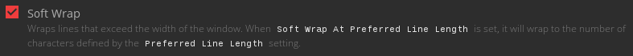
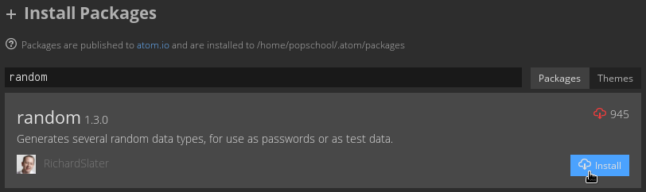
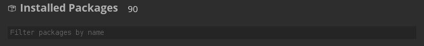
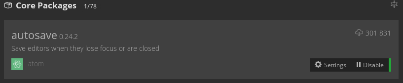
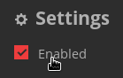

Comment améliorer votre Atom
Tout se passe dans les paramétres d'atom lui même.
Pour accéder au panneau de configuration, deux solutions :
- En passant par le menu : Edit > Preferences
- En utilisant le raccourci clavier : ctrl + ,
Soft Wrap
Dans l'onglet "Editor", vous trouverez le paramétre "Soft Wrap".


Thèmes
Dans atom et la plupart des editeurs de code, les thèmes sont composés de deux modules, l'interface et la syntaxe.
A noté que le module syntaxe comprends aussi bien la syntaxe(le texte) que le fond de l'éditeur étant donné qu'ils sont complémentaires.
Il n'y a pas de thème particulier recommandé, il s'agit des préférences de chacun. Préférez quand même des thèmes qui rendent le tout facilement lisible.
Les thèmes peuvent être téléchargés depuis atom dans l'onglet "Install. "
A droite du champ de recherche, choisissez "Themes " au lieu de "Packages ".
Ensuite entrez les mots clés définissants le genre de thèmes que vous souhaitez
installer.

Cliquez sur "Install " à droite du thème pour l'installer.

Une fois l'installation terminée, vous pourrez l'appliquer dans l'onglet "Themes ".

Ici il s'agit d'un thème pour la syntaxe mais la marche à suivre pour un thème d'interface est exactement le même.
A noter qu'Atom sera gelé durant l'application du thème.
Les paquets
Plus courrament appellés plugins, extensions, addons ou encore greffons, ce sont des fonctionnalitées qui s'ajoutent au logiciel.Installation
Direction l'onglet "Install". C'est ici que vous trouverez tout les paquets à installer et désinstaller. La configuration se fera dans l'onglet "Packages" pour des raisons pratiques.Pour installer un paquet, rien de plus simple, entrez dans le champ de recherche ce que vous voulez installer.

Placez votre curseur sur le bouton "Install", pressez le clic gauche de la souris et voila, après un long moment (variable selon le paquet), le paquet est installé et prêt à être utilisé dans sa configuration de base.

Gestion
Pour accéder aux paquets installés, il faut aller dans l'onglet "Packages".Utilisez la barre de recherche pour trouver rapidement le paquet que vous voulez gérer.

Cherchez un paquet, par exemple, autosave. Vous tombez sur un résultat et avez la possibilité de le désactiver (boutton "disable") ou d'accéder à ses préférences (boutton "settings").

Paquets utiles
autosave
Le paquet autosave permet de sauvegarder vos fichiers automatiquement lorsque vous changez de fenêtre. C'est aussi valable pour le changement d'onglet.Très pratique pour ceux qui ont l'habitude de travailler sur des éditeurs qui sauvegardent instantanéments chaque modifications et à double tranchant pour ceux qui ont l'habitude de sauvegarder à la mano comme dans le temps.
Malgrès le fait que ce soit un paquet natif de l'éditeur, il n'est pas activé par défaut. Il faut donc aller l'activer dans ses paramétres.

w3c-validation
Ce paquet est tout simplement l'intégration dans atom du validateur w3c officiel. Il nécessite une connection internet étant donné qu'il ne fait qu'envoyer le fichier aux serveurs de validation w3c (les mêmes que vous utilisez quand vous validez sur le site du w3c), ce qui peux provoquer une latence plus ou moins importante selon les connections.